Когда сеять перец? Пора ли подкормить? Чем эти пятна на листьях? Что росло тут прошлым летом? Записи — в тетрадке, в заметках телефона или нигде.
Знает ваши культуры, ваш регион и погоду за окном. Само считает сроки и утром показывает список дел на сегодня — с учётом того, что уже сделано.
История участка: что сажали, чем болело, сколько собрали. К следующему сезону это уже не память, а данные — и подсказка по севообороту.
Это первое, о чём спросят в комментариях. Лучше сказать прямо в ролике, чем отвечать сотню раз потом.
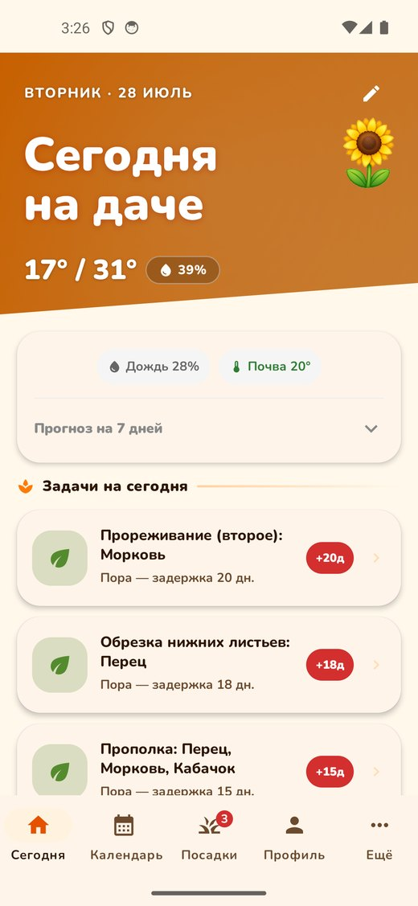
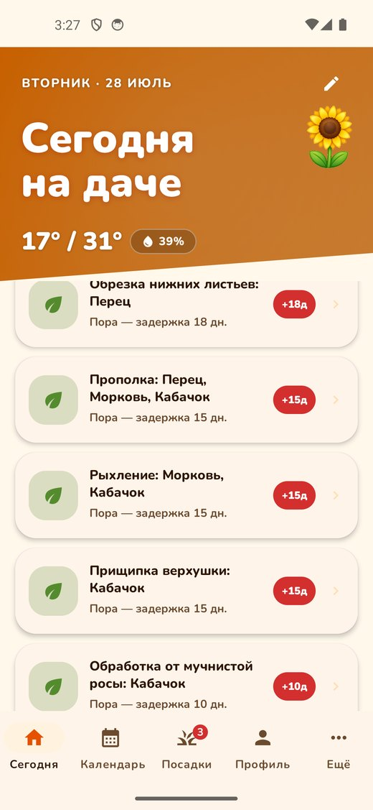
Открыл, посмотрел, пошёл делать. Ничего не нужно настраивать и вспоминать.
Не «по области», а по координатам конкретной дачи — их можно указать городом или взять с GPS прямо на месте.
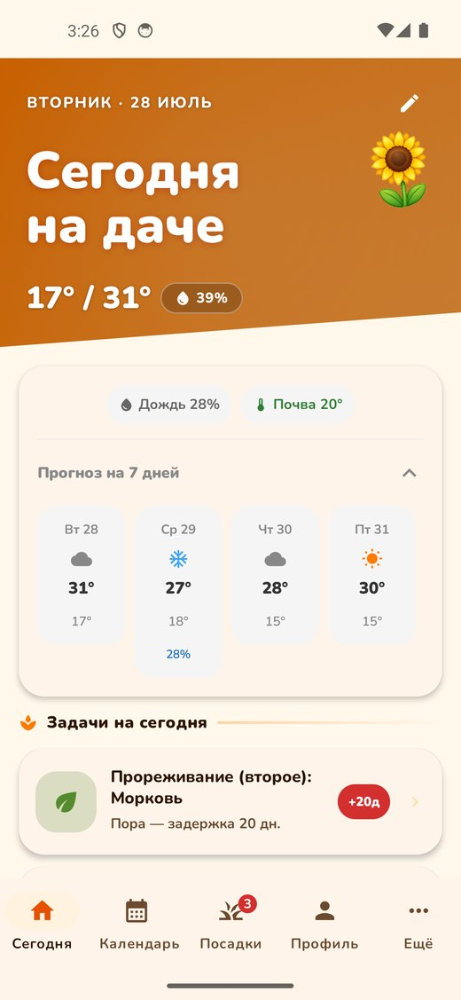
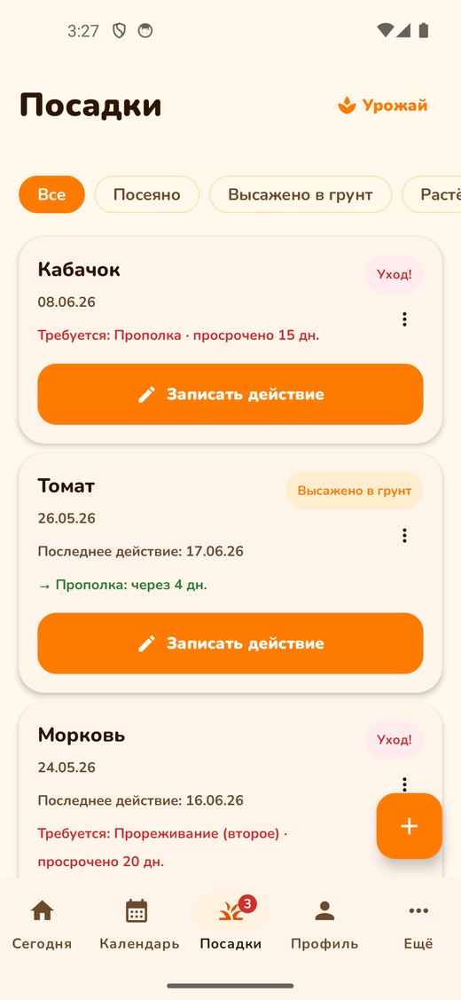
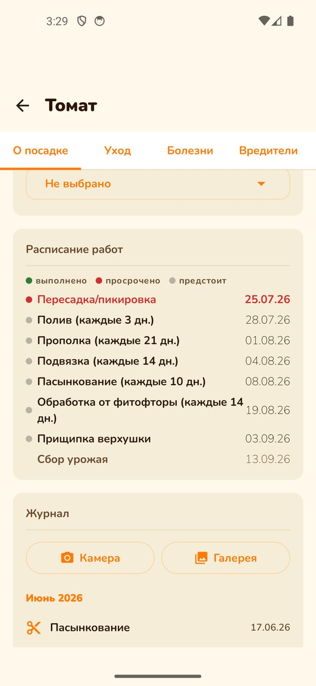
Добавили томат — приложение сразу расписало, что и когда с ним делать до самого сбора урожая.
Лунный календарь не вынесен отдельным разделом: фаза стоит прямо в клетке дня, рядом с задачами. Кто в это верит — увидит, кто нет — не заметит.
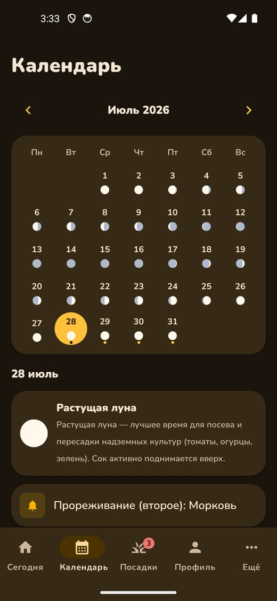
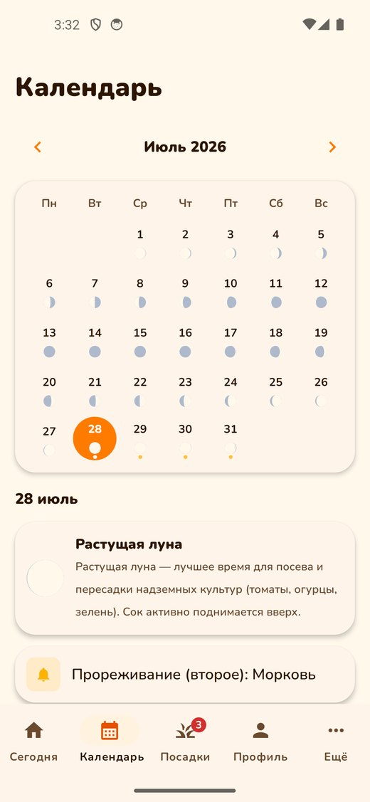
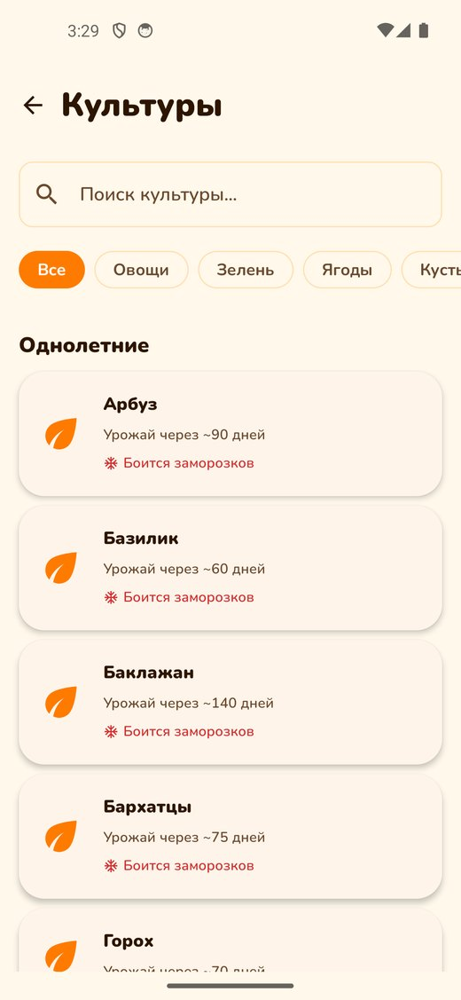
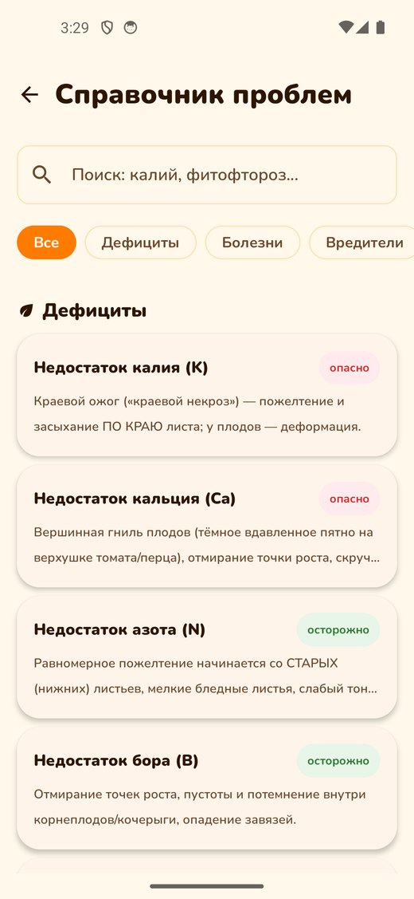
Не энциклопедия ради объёма, а то, что нужно в момент вопроса «что с ним не так».
Пример: коккомикоз вишни. Так устроен каждый из 78 разборов.
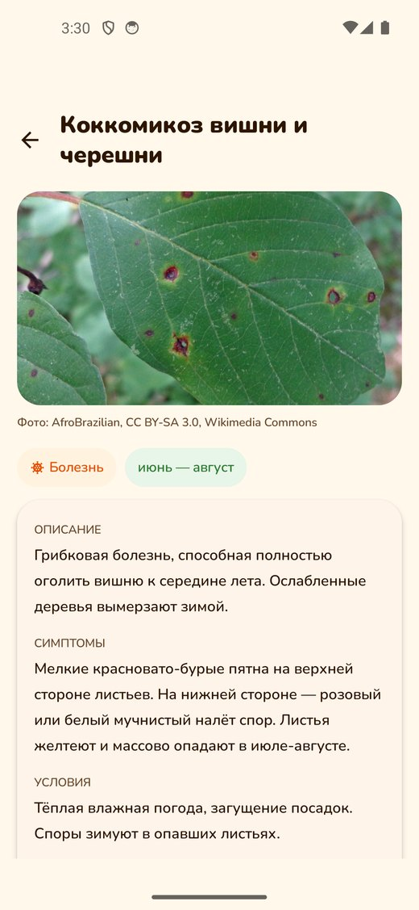
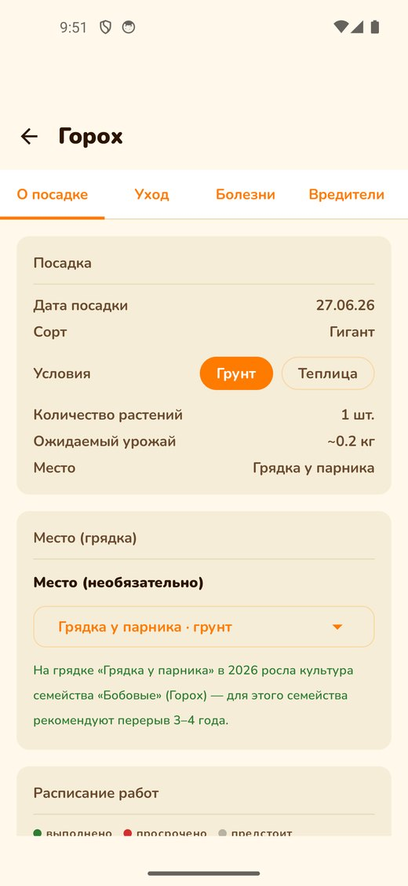
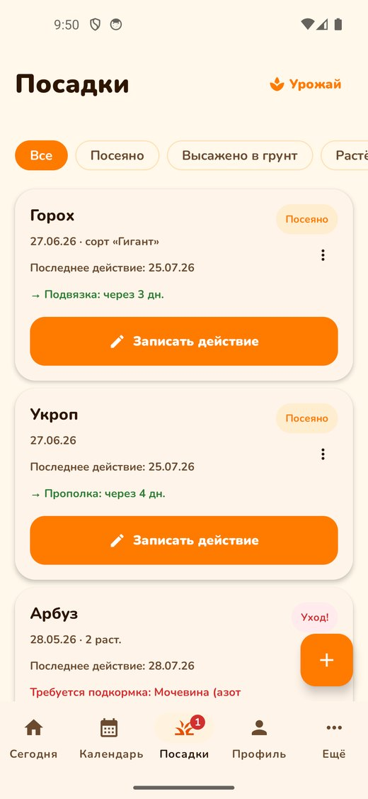
Приложение помнит, что росло на каждой грядке, и предупреждает, когда сажаете туда родственную культуру.
То, что превращает приложение из напоминалки в историю вашего огорода.
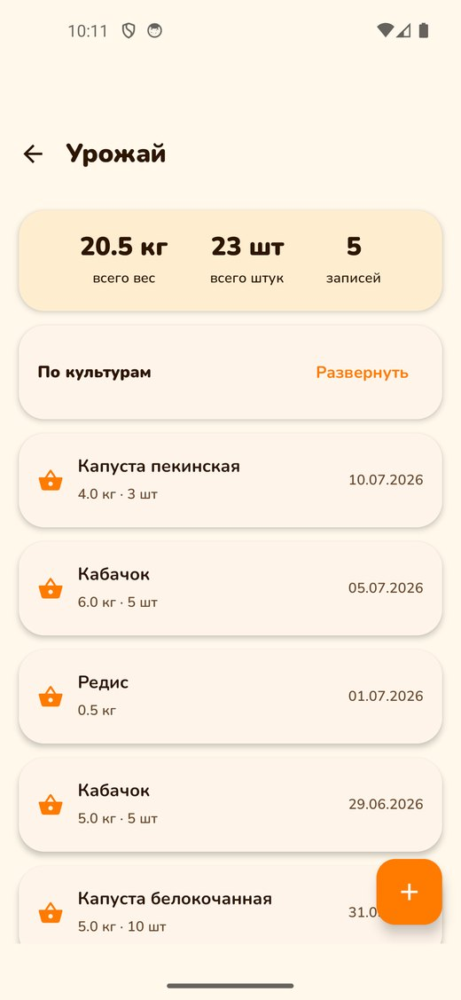
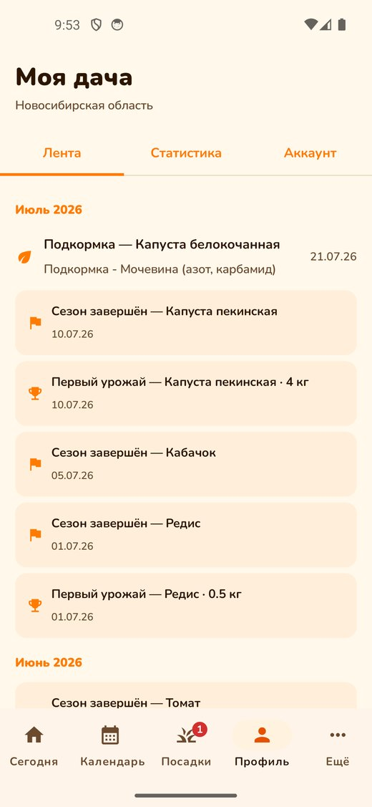
Коробка с пакетиками, которую никто не помнит наизусть. Культура, сорт, фото пакетика и срок годности. Просроченные сами поднимаются наверх списка, «истекает в этом сезоне» — отдельным цветом.
Снимать с экрана телефона: скриншота в этом наборе нет, фича вышла позже съёмки.
Три режима: как в системе, всегда светлая, всегда тёмная. Переключается в «Настройки → Тема оформления». Плюс режим крупного шрифта — увеличивает текст по всему приложению.
На даче связь ловит не везде. Задачи на сегодня открываются офлайн, а записи об уходе сохраняются в телефоне и уходят на сервер сами, когда сеть появится.
Заморозки, жара, полив, подкормка — каждый тип включается отдельно
Дача и огород у дома ведутся раздельно
3 снимка на посадку бесплатно, 30 — в подписке
В два касания, вместе со всеми данными
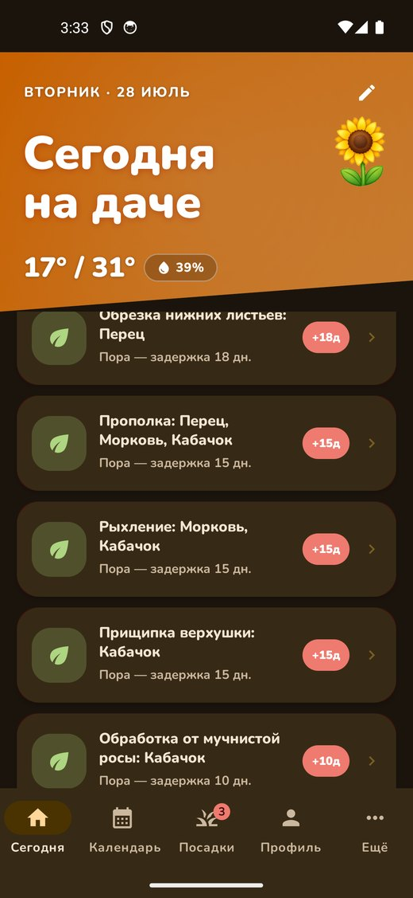
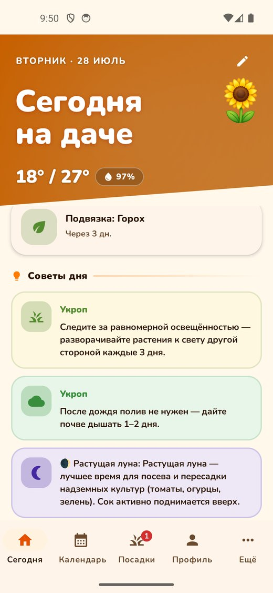
Переключение темы прямо в кадре — приём, который хорошо смотрится в коротком видео: одно движение, а картинка меняется целиком.
Здесь нет подвоха, который придётся оправдывать в комментариях. Это можно проговорить прямо.
Кадр 1: чашка кофе, телефон, экран «Сегодня». Кадр 2: палец листает задачи — полив, прополка, обработка. Кадр 3: идёте на грядку и отмечаете сделанное. Финал: «Список сам появляется каждое утро — я больше ничего не держу в голове».
Кадр 1: больной лист крупно, вопрос в лоб. Кадр 2: открываете справочник, листаете фотографии, находите похожее. Кадр 3: читаете «чем лечить». Финал: «78 разборов с фотографиями — сравниваешь и понимаешь».
Добавляете реальную посадку → показываете расписание работ до осени → журнал с фото → лента участка за месяц → урожай в килограммах. Мысль ролика: сезон превращается в историю, которая останется на следующий год.
Вечер, уведомление на экране блокировки: возможны заморозки. Вы идёте накрывать рассаду. Финал: «Предупредило заранее — рассада цела». Самый эмоциональный сюжет, попадает в живую боль.